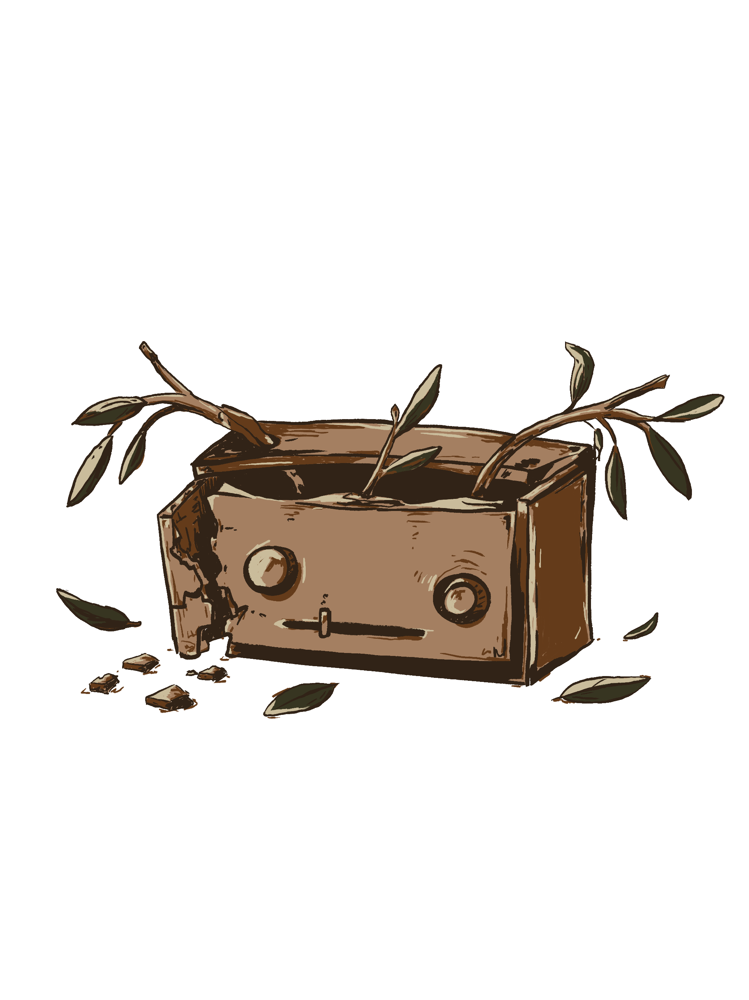

HENNA, VORREI SCRIVERTI UN MESSAGGIO
La mattina, quando mi sveglio, la luce resta incastrata tra la tapparella e la morbida tenda bianca che copre i vetri della finestra.
“Che vista da qui, si sta bene; tutto a posto mamma”.
Nel rigoroso ordine delle cose: faccio pipì, faccio una doccia, lavo il viso, faccio colazione e lavo i denti. Non dimentico nulla…ah sì certo poi mi vesto e sono fuori.
Penso a una tipa. Ha un paio d’occhi e dei capelli, una bocca e un naso, il passo svelto e un enorme cratere al posto dello sguardo. Voleva a tutti i costi che le riparassi una vecchia radio che usava da bambina perché, finora, nessuno è mai riuscito ad aggiustargliela. Io le ho detto più volte che avrei potuto darle una mano e che insieme forse avremmo potuto almeno smontarla. Lei si è rifiutata dicendomi che non capisco e che se non si fosse rotta, non me l’avrebbe chiesto. Forse sono io che non capisco cosa dici.
La sua pelle distesa, translucida e impermeabile alle emozioni era come porcellana e le vene che distese lungo tutto il corpo le davano un colore in ombra che, combinato al verde dei suoi occhi e al castano dei capelli, ricordava l’autunno e un albero di ulivo.
L’alchemica combinazione dei colori si muoveva come polveri nell’aria, tant’è che me la ritrovavo ovunque anche dove non c’era e ancora, questa combinazione, mi convinceva del fatto che fosse una creatura comparsa durante un’eclissi lunare o dopo una marea, ma non dei miei pensieri.
Acqua marina, soluzione salina.
Comunque tengo a precisare una cosa: mi guardavi solo quando credevi non me ne accorgessi, vivevi dietro la coda dei miei occhi e il nostro amore era tutto uno sbirciarci e ammiccarci tranne quando ti guardavo e tu alzavi gli occhi al cielo. Tu vivi ai margini e a me piace tanto.
Quando ridevi, mi dicevo che tutto andava bene e contavo i passi che mi avevano portato a quel momento. Lì ti vedevo. Poi, come indifesa, mi cacciavi via. Io le radioline non le so aggiustare. Cioè due colpetti e si riprende, no? Come l…a… vit…no?! No meglio di no.

La storia è tutta qui, bella lei, sensazionale; volevo far notare che è presente anche il concetto di donna in quanto creatura dai tratti caprini, un po’ vaghi e affilati intenti a tagliuzzare il giorno in porzioni d’ombra, figura irraggiungibile a piedi come quando ti affacci e vorresti percorrere il tratto che ti separa dalla luna, un satellite che ha costretto molti a tenere la testa rivolta al cielo senza per forza credere in un dio, a credere nei gatti e nei segreti notturni in continua espansione come l’universo disteso in contraddizioni. In tutto questo sortilegio c’è però una menzogna e se questa si palesa allora mi stordisce.
Tu peccavi e l’amore era per te un atto di dolore e i corpi un confessionale dove tu uccidevi il prete. Vuoi espiare tutte le tue colpe urlandomi contro e restando rannicchiata in un angolo lì per terra. Che strano amarti senza mai avertelo detto.
La descrizione sopra riportata fa riferimento a te e alla voglia di scrutare quei pezzi che mi fanno notare ancora di più il vuoto attorno; ma qui il desiderio non conta perché vorrei amare per fregarmene del resto e perché stanno nascendo dentro me bisogni inutili. Mi ricordo di te ora come una descrizione perché non posso raggiungerti. Se fossi qui con te, già mi vedresti al mercato a vendere il pesce.
Seguici sulla nostra pagina Instagram per non perdere neanche un articolo
@rivista.paesa